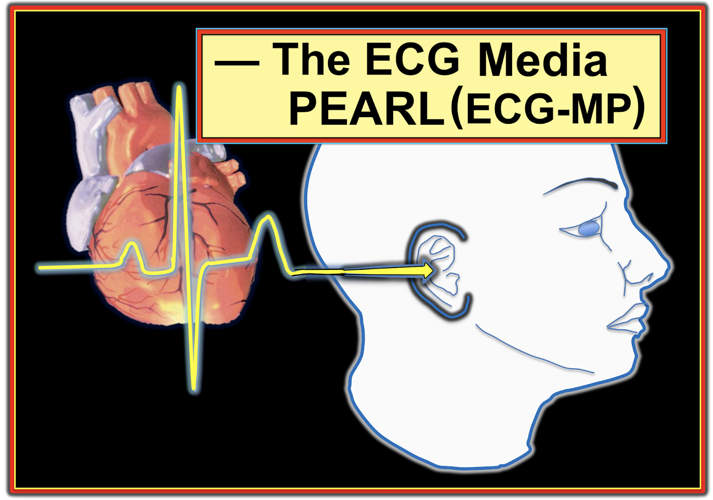
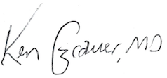

ECG Blog #225 — ECG Media PEARL (16-5-2021)
Bạn đọc thân mến: Vào tháng 1 năm 2021 — tôi đã bắt đầu loạt bài ECG Media PEARL Series này. Mục đích của tôi khi làm vậy rất đơn giản: tôi muốn bổ sung phương tiện âm thanh và video để nâng cao hiệu quả và hỗ trợ việc giảng dạy.


Không cần phải nói, để thông thạo việc đọc điện tâm đồ thì cần phải nhìn thấy bản ghi mà bạn đang phân tích. Dù vậy — những khái niệm điện tâm đồ quan trọng đôi khi được truyền đạt tốt nhất bằng một thông điệp Âm thanh ngắn hoặc một ECG Video ngắn gọn.
- Khi số lượng Media Pearl của tôi tiếp tục tăng lên — đã đến lúc tổ chức lại cách lập chỉ mục cho các Pearl này. Tôi hy vọng hệ thống mới của tôi (bên dưới), sắp xếp theo các nhóm Lâm sàng, sẽ giúp bạn dễ tìm thấy "Pearl" mà bạn đang cần.
- LƯU Ý: Đây là "đường link dễ nhớ" = tinyurl.com/KG-Blog-Media-Pearls —
- Như mọi khi — tôi luôn hoan nghênh ý kiến đóng góp của bạn! Mọi bình luận hay câu hỏi: HÃY VIẾT CHO TÔI tại ekgpress@mac.com —
========================================
LINK tới các ECG Media Pearl của tôi (v = video; a = đã cập nhật!):
- MP-1 - MP-2 - MP-3 - MP-4 - MP-5v - MP-6v - MP-7
- MP-8v - MP-9v - MP-10 - MP-11 - MP-12 -
- MP-13a - MP-14 - MP-15 - MP-16v - MP-17 -
- MP-18 - MP-19a - MP-20v - MP-21v - MP-22v -
- MP-23 - MP-24 - MP-25 - MP-26a - MP-27v -
- MP-28v - MP-29 - MP-30 - MP-31 - MP-32 -
- MP-33 - MP-34 - MP-35a - MP-36 - MP-37 -
- MP-38 - MP-39a - MP-40 - MP-41A - MP-42v -
- MP-43 - MP-44 - MP-45 - MP-46a - MP-47 -
- MP-48 - MP-49 - MP-50 - MP-51a - MP-52v -
- MP-53v - MP-54 - MP-55 - MP-56 - MP-57 -
- MP-58 - MP-59 - MP-60 - MP-61 - MP-62 -
- MP-63 - MP-64 - MP-65 - MP-66 - MP-67 -
- MP-68 - MP-69 - MP-70 - MP-71 - MP-72 -
- MP-73 - MP-74 - MP-75 - MP-76 - MP-77v -
- MP-78v - MP-79v - MP-80 - MP-81v - MP-82v -
- MP-84 - MP-85 - MP-86 -
========================================
— Để quay lại ECG Blog mới nhất của tôi = BẤM VÀO ĐÂY —
— Để xem các ECG Video — BẤM VÀO ĐÂY —
========================================

Sử dụng Cách tiếp cận hệ thống:
- ECG Media Pearl #3 (3:00 phút Âm thanh) — Cách tiếp cận Ps, Qs & 3R để Đọc Nhịp có hệ thống (18/1/2021) — Xem ECG Blog #185 —
- ECC Media Pearl #23 (7:40 phút Âm thanh) — ECG Blog #205 — Một Cách tiếp cận hệ thống thân thiện với người dùng để Đọc điện tâm đồ 12 chuyển đạo (18/3/2021) .
- ECG Media Pearl #27 (3:00 phút Video) — ECG Blog #210 — Ôn lại Quy tắc 300 để ước tính tần số tim — và — ở phút 1:25 của video, Phương pháp Đếm-Cách-Một-Nhát để Ước tính Tần số với các nhịp nhanh (2/4/2021) — Xem thêm ECG Blog #278 về một trường hợp tần số rất nhanh khác —
- ECG Media Pearl #31 (5:30 phút Âm thanh) — ECG Blog #214 — TẠI SAO tôi nhấn mạnh câu nói "12 Chuyển đạo thì Tốt hơn Một?" (14/4/2021).
- ECG Media Pearl #33 (7:00 phút Âm thanh) — ECG Blog #216 — Tìm hiểu nên làm gì khi bạn không chắc chắn về Chẩn đoán Nhịp. Điều này thực sự quan trọng thường xuyên đến mức nào? (20/4/2021).
- ECG Media Pearl #37 (6:00 phút Âm thanh) — ECG Blog #220 — Ôn lại cách xác định LIỆU Bệnh nhân của bạn có Ổn định Huyết động hay không! (2/5/2021).
- ECG Media Pearl #51a (8:25 phút Âm thanh) — ECG Blog #235 — Trình bày suy nghĩ của tôi về "Một vài Bước Đơn giản giúp Đọc các Nhịp Phức tạp" — 20/6/2021 — Đã cập nhật ngày 12/11/2021 cho ECG Blog #261) — Xem thêm ECG Blog #286 —
- ECG Media Pearl #54 (5:00 phút Âm thanh) — ECG Blog #239 — Ôn lại Nhát dội (echo) là gì, và ứng dụng lâm sàng của việc nhận ra dấu hiệu này (4/7/2021).
- ECG Media Pearl #55 (4:20 phút Âm thanh) — ECG Blog #240 — Thuật ngữ "SVT" có nghĩa là gì? Pearl Âm thanh này ôn lại ngữ nghĩa và ứng dụng lâm sàng liên quan đến việc dùng thuật ngữ này (8/7/2021).
- ECG Media Pearl #62 (9:00 phút Âm thanh) — ECG Blog #248 — Ôn lại các Nguyên nhân Thường gặp gây Sóng R cao ở Chuyển đạo V1 (1/9/2021).
- ECG Media Pearl #66 (11:15 phút Âm thanh) — ECG Blog #252 — Đi sâu vào chủ đề "Chuyện Thường gặp thì Thường gặp" (kèm các PEARL giúp nhanh chóng nhận ra PAC bị blốc — AFlutter — AFib — VT — Mobitz I vs Mobitz II — LAHB vs LPHB — và SSS (Sick Sinus Syndrome – hội chứng suy nút xoang) — (21/9/2021).
- ECG Media Pearl #67 (9:10 phút Âm thanh) — ECG Blog #253 — Áp dụng sự thông thái từ 2 câu nói yêu thích của tôi vào "nghệ thuật" đọc điện tâm đồ. Hai câu nói đó là = "Chim cùng lông thì bay cùng đàn" (Birds of a Feather) và "Nhìn thấy rừng chứ không chỉ thấy cây" (Forest from Trees) (27/9/2021).
- ECG Media Pearl #77 (11:00 phút Video) — ECG Blog #269 — Ôn lại việc đánh giá Tăng Tiến Sóng R như một phần của mẹo ghi nhớ Q-R-S-T trong Cách tiếp cận hệ thống để đọc điện tâm đồ 12 chuyển đạo (bao gồm làm rõ thuật ngữ Tăng tiến sóng R "Kém" vs Vùng chuyển tiếp — 18/12/2021).
- ECG Media Pearl #78 (4:30 phút Video) — ECG Blog #270 — Ôn lại cách chúng ta định nghĩa "Sóng Q" — và cách phân biệt sóng Q vách "bình thường" với sóng Q Nhồi máu (22/12/2021).
- ECG Media Pearl #79 (3:00 phút Video) — ECG Blog #271 — Ôn lại cách chúng ta xác định Đường Nền của Đoạn ST (tức là, nên dùng đoạn PR hay đoạn TP — hay cả hai? (26/12/2021).
- mmm
- ECG Media Pearl #84a và #84b (9:00 phút và 6:00 phút Âm thanh) — ECG Blog #290 (Hiện tượng Emery) và ECG Blog #291 — Trình bày những nhận xét của tôi về các Lỗi Thường gặp khi Đọc Điện tâm đồ (đặc biệt chú ý đến việc đọc nhịp và điện tâm đồ 12 chuyển đạo — 11/3/2022).
=================================
Giản đồ bậc thang (Laddergram) (Cách Đọc và Vẽ Laddergram):
- ECG Media Pearl #5 (7:00 phút Video) — ECG Blog #188 — CÁCH hiểu Laddergram! (23/1/2021 — Cập nhật ngày 26/6/2021). LƯU Ý: Có rất nhiều LINK trong Blog #188 dẫn tới các bài khác có Laddergram vẽ từng bước!
- ECG Media Pearl #82 (8:40 phút Video) — ECG Blog #280 — Phân tích chi tiết rối loạn nhịp đầy thử thách này (kèm Video ECG phân tích từng bước giản đồ bậc thang (Laddergram) mà tôi đề xuất — 1/2/2022).
=================================
Trục — Blốc Phân nhánh — Blốc Nhánh:
- ECG Media Pearl #20 (14:30 phút Video) — ECG Blog #203 — Cách tiếp cận thân thiện với người dùng để Tính Trục (12/3/2021).
- ECG Media Pearl #21 (12:00 phút Video) — ECG Blog #203 — Cách tiếp cận thân thiện với người dùng đối với Blốc phân nhánh (LAHB/LPHB) và Blốc hai phân nhánh (RBBB/LAHB-LPHB — 12/3/2021).
- ECG Media Pearl #22 (13:15 phút Video) — ECG Blog #204 — Trình bày một cách tiếp cận thân thiện với người dùng để chẩn đoán Blốc Nhánh Bó His (RBBB/LBBB/IVCD) chỉ trong vài giây! (15/3/2021) — xem thêm ECG Blog #282 —
- ECG Media Pearl #57 (8:00 phút Âm thanh) — ECG Blog #242 — Ôn lại khái niệm Blốc Nhánh Bó His liên quan tần số (kèm ứng dụng lâm sàng) ở bệnh nhân Mobitz II này (15/7/2021).
=================================
Lớn các Buồng tim (RAA/LAA - RVH - LVH - PE cấp ):
- ECG Media Pearl #50 (7:20 phút Âm thanh) — ECG Blog #234 — Ôn lại chẩn đoán trên điện tâm đồ đối với RVH (có phân biệt giữa bệnh phổi và RVH — 17/6/2021).
- ECG Media Pearl #59 (9:10 phút Âm thanh) — ECG Blog #245 — Ôn lại chẩn đoán trên điện tâm đồ đối với LVH (và tác động lâm sàng của nó trong cả các rối loạn tim mạn tính lẫn cấp tính — 18/8/2021).
=================================
Chẩn đoán Thiếu máu cục bộ/Nhồi máu Cấp:
- ECG Media Pearl #1 (3:00 phút Âm thanh) — Về sóng T giống deWinter (10/1/2021) — Xem ECG Blog #183 -
- ECG Media Pearl #2 (2:15 phút Âm thanh) — Mối quan hệ đối nghịch soi gương "kỳ diệu" khi nhồi máu cấp giữa chuyển đạo III và chuyển đạo aVL (15/1/2021) — Xem ECG Blog #184 —
- ECG Media Pearl #7 (4:50 phút Âm thanh) — ECG Blog #190 — Khi nào nghi ngờ RV MI trên điện tâm đồ 12 chuyển đạo chuẩn (Động mạch "thủ phạm" là động mạch nào?) (3/2/2021).
- ECG Media Pearl #10 (10 phút Âm thanh) — ECG Blog #193 — Trình bày lý do tại sao thuật ngữ "OMI" ( = Occlusion-based MI – nhồi máu cơ tim do tắc) nên thay thế thuật ngữ quen thuộc hơn là "STEMI" — và trình bày những điều cơ bản để dự đoán động mạch "thủ phạm" (10/2/2021) — Phần bổ sung có các Hình về Tắc thân chung động mạch vành trái — Nhồi máu vùng sau đơn độc — Hội chứng Wellens — Nhồi máu nhĩ. Xem thêm ECG Blog #294 — và đặc biệt là ECG Blog #337 — Link tới Ca bệnh trên Blog của SSmith = tinyurl.com/KG-OMI-Example —
- ECG Media Pearl #11 (6 phút Âm thanh) — ECG Blog #194 — Ôn lại cách nhận biết LIỆU động mạch "thủ phạm" đã được tái tưới máu (dựa vào tiêu chuẩn lâm sàng và điện tâm đồ) (14/2/2021) — Xem thêm ECG Blog #294 — XXX
- ECG Media Pearl #26a (7:40 phút Âm thanh) — ECG Blog #209 — Hội chứng Wellens là gì — và nó không phải là gì (30/3/2021 — Cập nhật ngày 28/9/2021 cho ECG Blog #254).
- ECG Media Pearl #35a (4:50 phút Âm thanh) — ECG Blog #218 — KHI NÀO thì một Sóng T là Tối cấp vs một biến thể Tái cực (26/4/2021 — Cập nhật ngày 4/11/2021 cho ECG Blog #260).
- ECG Media Pearl #38 (11:30 phút Âm thanh) — ECG Blog #221 — Ôn lại Chẩn đoán trên điện tâm đồ đối với Nhồi máu cơ tim Cấp khi có BBB (6/5/2021).
- ECG Media Pearl #39a (4:45 phút Âm thanh) — ECG Blog #222 — Ôn lại khái niệm Thay đổi sóng ST-T Động (và cách dấu hiệu điện tâm đồ này có thể giúp xác định liệu có chỉ định thông tim cấp hay không) (9/5/2021 — Cập nhật ngày 3/11/2021 cho ECG Blog #260).
- ECG Media Pearl #44 (3:30 phút Âm thanh) — ECG Blog #228 — Thế nào là Nhồi máu cơ tim "Thầm lặng"? — và TẦN SUẤT xảy ra "Nhồi máu cơ tim thầm lặng" là bao nhiêu? (kết quả từ nghiên cứu Framingham — 24/5/2021).
- ECG Media Pearl #46a (6:35 phút Âm thanh) — ECG Blog #230 — Ôn lại CÁCH so sánh các Điện tâm đồ liên tiếp (tức là, "Bạn đang so sánh Táo với Táo hay với Cam?" — 1/6/2021 — Cập nhật ngày 3/11/2021 cho ECG Blog #260).
- ECG Media Pearl #60 (8:30 phút Âm thanh) — ECG Blog #246 — Ôn lại cách dùng "Nghiệm pháp Soi gương" (Mirror Test) để giúp nhận ra: i) Nhồi máu cơ tim Vùng sau cấp; ii) Nhồi máu cơ tim cấp Bên cao hoặc Vùng dưới (tức là, mối quan hệ soi gương (reciprocal) "kỳ diệu" giữa chuyển đạo III và aVL); và, iii) ST chênh lên vùng trước do LVH (không phải là dấu hiệu của nhồi máu cơ tim vùng trước) — (23/8/2021) — Xem thêm ECG Blog #285 — XXX
- ECG Media Pearl #70 (10:20 phút Âm thanh) — ECG Blog #258 — Ôn lại CÁCH "Định tuổi" một Nhồi máu dựa trên điện tâm đồ ban đầu (27/10/2021).
- ECG Media Pearl #73 (5:40 phút Âm thanh) — ECG Blog #265 — Ôn lại khái niệm ST Chênh lên "Vây Cá mập" (30/11/2021).
- ECG Media Pearl #74 (6:45 phút Âm thanh) — ECG Blog #266 — Ôn lại cách phân biệt giữa Sóng T deWinter vs Nhồi máu Vùng sau (4/12/2021).
- ECG Media Pearl #78 (4:30 phút Video) — ECG Blog #270 — Ôn lại cách chúng ta định nghĩa "Sóng Q" — và cách phân biệt sóng Q vách "bình thường" với sóng Q Nhồi máu (22/12/2021).
- ECG Media Pearl #79 (3:00 phút Video) — ECG Blog #271 — Ôn lại cách chúng ta xác định Đường Nền của Đoạn ST (tức là, nên dùng đoạn PR hay đoạn TP — hay cả hai? (26/12/2021). Bài blog này cũng nêu bật Thiếu máu cục bộ dưới nội tâm mạc lan tỏa ( = ST chênh xuống ở ≥7-8 chuyển đạo kèm ST chênh lên ở chuyển đạo aVR) — Xem PEARL #1 trong phần "Putting It All Together" (Tổng hợp tất cả lại), ở gần cuối trang.
=================================
Chẩn đoán Nhịp nhanh thất (VT so với SVT — kèm ôn lại dẫn truyền lệch hướng):
- ECG Media Pearl #13a (12:20 phút Audio) — ECG Blog #196 — Trình bày "cách nhìn của tôi" về việc đánh giá WCT đều (nhịp nhanh QRS rộng — Wide-Complex Tachycardia) — kèm các mẹo để phân biệt giữa VT với SVT có BBB sẵn có hoặc có dẫn truyền lệch hướng (20/2/2021 — Cập nhật ngày 21/11/2021 cho ECG Blog #263) — XEM thêm ECG Blog #220 và ECG Blog #283 —
- ECG Media Pearl #14 (8 phút Audio) — ECG Blog #197 — VT vô căn là gì? — TẠI SAO chúng ta cần quan tâm? Đặc biệt chú ý tới 2 dạng thường gặp nhất = VT RVOT (đường ra thất phải — Right Ventricular Outflow Track) và VT phân nhánh (23/2/2021) — Xem thêm ECG Blog #278 —
- ECG Media Pearl #15 (5 phút Audio) — ECG Blog #198 — VT đơn dạng có đều không? — chú ý tới 2 Điều cần lưu ý, nhấn mạnh rằng: i) AFib nhanh có thể trông như đều; và, ii) VT đơn dạng không phải lúc nào cũng đều hoàn hảo (26/2/2021).
- ECG Media Pearl #28 (4:40 phút Video) — ECG Blog #211 — Giải thích TẠI SAO một số nhát đến sớm và một số nhịp SVT lại được dẫn truyền lệch hướng (và tại sao dạng dẫn truyền lệch hướng thường gặp nhất lại có hình dạng RBBB) (5/4/2021) — Xem thêm ECG Blog #279 —
- ECG Media Pearl #29 (8:00 phút Audio) — ECG Blog #212 — Trình bày Hiện tượng Ashman là GÌ ... — Chúng ta sử dụng nó NHƯ THẾ NÀO? — và — Nó có chính xác không khi nhịp nền là AFib? (8/4/2021) — Xem thêm ECG Blog #279 —
- ECG Media Pearl #30 (7:40 phút Audio) — ECG Blog #213 — CÁCH phân biệt giữa Dẫn truyền lệch hướng với ngoại tâm thu thất — khi nhịp nền là AFib? (11/4/2021).
- ECG Media Pearl #34 (6:00 phút Audio) — ECG Blog #217 — BẠN có thực sự đang thấy Phân ly nhĩ thất trong Nhịp WCT đó không? (tức là, Nhịp này có phải là VT không?) (23/4/2021).
- ECG Media Pearl #36 (7:45 phút Audio) — ECG Blog #219 — Trình bày cách phân biệt giữa nhịp nhanh thất với AFib khi Nhịp nhanh QRS rộng Không Đều (29/4/2021).
- ECG Media Pearl #37 (6:00 phút Audio) — ECG Blog #220 — Ca bệnh minh họa ôn lại DANH SÁCH #1 của tôi: Phân biệt giữa VT với SVT kèm BBB sẵn có hoặc dẫn truyền lệch hướng. PEARL Audio = Cách xác định LIỆU bệnh nhân của bạn có Huyết động ổn định hay không! (2/5/2021).
- ECG Media Pearl #48 (5:00 phút Audio) — ECG Blog #231— Trình bày cách phân biệt trên điện tâm đồ và trên lâm sàng giữa VT đa dạng (PMVT) với xoắn đỉnh — Torsades de Pointes (5/7/2021).
- ECG Media Pearl #47 (5:45 phút Audio) — ECG Blog #232 và ECG Blog #243 — Trình bày khái niệm Nhịp đôi (có thể do nhịp đôi nhĩ hoặc nhịp đôi thất, dẫn truyền Wenckebach — hoặc các nguyên nhân khác — 10/6/2021).
=================================
Các loại Nhịp Trên Thất (SVT-AFib-Cuồng nhĩ-MAT, v.v.):
- ECG Media Pearl #16 (2:20 phút Video) — ECG Blog #199 — Thế nào là MAT (nhịp nhanh nhĩ đa ổ — Multiple Atrial Tachycardia)? Chẩn đoán như thế nào? (1/3/2021).
- ECG Media Pearl #17 (3:30 phút Audio) — ECG Blog #200 — Thế nào là Ổ tạo nhịp nhĩ lang thang (để phân biệt với MAT)? (4/3/2021).
- ECG Media Pearl #40 (9:45 phút Audio) — ECG Blog #223 — Chẩn đoán nhịp: Đánh giá sóng P và hoạt động nhĩ (13/5/2021).
- ECG Media Pearl #43 (1:45 phút. Audio) — ECG Blog #227 — Trình bày Quy tắc Bix (giải thích vì sao hiếm gặp nhịp nhanh xoang kèm blốc AV độ 1) — (23/5/2021).
- ECG Media Pearl #45 (10:00 phút Audio) — ECG Blog #229 — Tại sao Cuồng nhĩ lại hay bị bỏ sót đến vậy? Trình bày các PEARL về chẩn đoán cuồng nhĩ (AFlutter) trên điện tâm đồ — và — về cách phân biệt giữa AFlutter với nhịp nhanh nhĩ (29/5/2021) — Xem thêm ECG Blog #287 —
- ECG Media Pearl #55 (4:20 phút Audio) — ECG Blog #240 — Thuật ngữ "SVT" có nghĩa là gì? Pearl Audio này ôn lại ngữ nghĩa và ứng dụng lâm sàng liên quan đến việc dùng thuật ngữ này (8/7/2021) — Xem thêm ECG Blog #287 —
- ECG Media Pearl #64 (10:50 phút Audio) — ECG Blog #250 — Ôn lại DANH SÁCH #2 của tôi: Các nguyên nhân thường gặp của nhịp SVT đều (8/9/2021) — Xem thêm ECG Blog #287 —
=================================
Chẩn đoán Blốc AV/Phân ly nhĩ thất (Nhịp theo nhóm):
- ECG Media Pearl #4 (4:30 phút Audio) — Các Blốc AV & KHI NÀO cần Nghi ngờ Mobitz I (21/1/2021) — Xem ECG Blog #186 —
- ECG Media Pearl #6 (9:30 phút Video) — ECG Blog #189 — Blốc AV loại nào? Phân tích chi tiết rối loạn nhịp đầy thử thách này (bao gồm Video điện tâm đồ phân tích từng bước giản đồ bậc thang (laddergram) phức tạp này) (30/1/2021 — Cập nhật ngày 26/6/2021).
- ECG Media Pearl #8 (7:00 phút Video) — ECG Blog #191 — Phân biệt giữa Phân ly nhĩ thất với Blốc AV hoàn toàn (6/2/2021 — Cập nhật ngày 24/6/2021).
- ECG Media Pearl #9 (4:45 phút Video) — ECG Blog #192 — Trình bày 3 Nguyên nhân gây Phân ly nhĩ thất — và nhấn mạnh vì sao phân ly nhĩ thất không đồng nghĩa với blốc AV hoàn toàn (9/2/2021 — Cập nhật ngày 24/6/2021).
- ECG Media Pearl #12 (6:40 phút Audio) — ECG Blog #195 — Trình bày hiện tượng được gọi là phân ly nhĩ thất đồng nhịp (trong đó tần số nhĩ và tần số bộ nối [hoặc tần số thất] gần như bằng nhau, nhưng sóng P không được dẫn truyền xuống thất) (17/2/2021).
- ECG Media Pearl #19a (6:45 phút Audio) — ECG Blog #202 — Một vài điểm cần xem nhanh, giúp bạn khẳng định hoặc loại trừ blốc AV hoàn toàn trong vòng vài giây! (10/3/2021 — Cập nhật ngày 15/10/2021 cho ECG Blog #257).
- ECG Media Pearl #41a (3:45 phút Audio) — ECG Blog #224 — Trình bày CÁCH nhận ra trong vòng vài giây (!!!) blốc AV độ 2 Mobitz I ( = Wenckebach AV) khi có STEMI thành dưới đang diễn tiến (17/5/2021 — Cập nhật ngày 9/11/2021 cho ECG Blog #262).
- ECG Media Pearl #42 (11:00 phút Video) — ECG Blog #226 — Trình bày ca nhồi máu thành dưới mới xảy ra kèm Wenckebach AV hai tầng (21/5/2021).
- ECG Media Pearl #52 (15:00 phút Video) — ECG Blog #236 — Trình bày 3 Loại Blốc AV độ 2 — cùng với — thuật ngữ khó định nghĩa blốc AV "mức độ cao" (24/6/2021) — (Video này cũng rất liên quan đến ca bệnh được trình bày trong ECG Blog #237).
- ECG Media Pearl #47 (5:45 phút Audio) — ECG Blog #232 và ECG Blog #243 — Trình bày khái niệm Nhịp đôi (có thể do nhịp đôi nhĩ hoặc nhịp đôi thất, dẫn truyền Wenckebach — hoặc các nguyên nhân khác — 10/6/2021).
- ECG Media Pearl #61 (5:45 phút Audio) — ECG Blog #247 — Trình bày CÁCH nhận biết LIỆU một sóng P có đang được dẫn truyền? Trả lời được câu hỏi này là MẤU CHỐT để xác định căn nguyên của các bản ghi blốc AV/phân ly nhĩ thất phức tạp (27/8/2021).
- ECG Media Pearl #65 (6:20 phút Audio) — ECG Blog #251 — Trình bày CÁCH một chu kỳ Wenckebach AV có thể kết thúc (đồng thời ôn lại "Dấu chân" của Wenckebach — 16/9/2021).
- ECG Media Pearl #18 (7:45 phút Audio) — ECG Blog #201 — Về việc nhận biết nhiễu — và — dùng tam giác Einthoven để xác định trong vòng vài giây chi "thủ phạm" gây nhiễu trên điện tâm đồ của bạn (7/3/2021) — (Tôi cũng đã dùng Pearl Audio này cho ECG Blog #255 ngày 6/10/2021, cho một ca trong đó nhiễu giả dạng phân ly nhĩ thất! ).
- ECG Media Pearl #68 (6:15 phút Audio) — ECG Blog #256 — Trình bày ý nghĩa của thuật ngữ "thoát–bắt được" (escape-capture) (đây là một dạng đặc biệt của nhịp đôi — 10/10/2021).
- ECG Media Pearl #69 (2:45 phút Audio) — ECG Blog #256 — Trình bày các dấu hiệu điện tâm đồ của SSS = hội chứng suy nút xoang (Sick Sinus Syndrome) (10/10/2021 — trích từ Pearl Audio được trình bày trong Blog #252).
- ECG Media Pearl #71 (5:45 phút Audio) — ECG Blog #259 — Trình bày hiện tượng Wenckebach hai tầng ở đường ra của nút AV (CÁCH nhận biết hiện tượng này — và cách phân biệt nó với Mobitz II — 2/11/2021).
- ECG Media Pearl #75 (6:10 phút Audio) — ECG Blog #267 — Trình bày cách nhận biết LIỆU một nhịp bộ nối (nút AV) là bệnh lý hay phù hợp (9/12/2021).
=================================
Vấn đề kỹ thuật (Nhận biết nhiễu; Đặt sai vị trí điện cực):
- ECG Media Pearl #18 (7:45 phút Audio) — ECG Blog #201 — Về việc nhận biết nhiễu — và — dùng tam giác Einthoven để xác định trong vòng vài giây chi "thủ phạm" gây ra nhiễu trên điện tâm đồ của bạn (7/3/2021) — (Tôi cũng đã dùng MP-18 cho ECG Blog #255 ngày 6/10/2021).
- ECG Media Pearl #32 (7:30 phút Audio) — ECG Bog #215 — Trình bày Định dạng điện tâm đồ Cabrera — và ghi điện tâm đồ với tốc độ ghi 50 mm/giây (17/4/2021).
- ECG Media Pearl #72 (5:45 phút Audio) — ECG Blog #264 — Trình bày cách nghi ngờ Đảo điện cực chi (đặc biệt là đảo điện cực LA-RA — 25/11/2021).
=================================
Đọc điện tâm đồ bằng máy tính ("Bạn hay thù"? ):
- ECG Media Pearl #24 (9:00 phút Audio) — ECG Blog #207 — Ưu & nhược điểm của báo cáo điện tâm đồ bằng máy tính (24/3/2021).
=================================
Các thực thể KHÁC (Viêm màng ngoài tim-cơ tim-Brugada-Rối loạn điện giải ):
- ECG Media Pearl #25 (9:50 phút Audio) — ECG Blog #208 — Trình bày chẩn đoán điện tâm đồ Viêm màng ngoài tim cấp (27/3/2021).
- ECG Media Pearl #49 (7:40 phút Audio) — ECG Blog #233 — Trình bày dấu hiệu điện tâm đồ sóng T đảo ngược thành trước (nhấn mạnh việc không được bỏ sót PE cấp là nguyên nhân! — 12/6/2021).
- ECG Media Pearl #53 (9:00 phút và 8:00 phút, gồm 2 phần Video) — ECG Blog #238 — Trình bày chẩn đoán điện tâm đồ các hình ảnh Brugada-1 và Brugada-2 — và cách phân biệt Hội chứng Brugada với Kiểu hình sao chép (phenocopy)! (1/7/2021).
- ECG Media Pearl #56 (5:35 phút Audio) — ECG Blog #241 — Thế nào là Sóng Osborn? — (GỢI Ý: Sóng Osborn không chỉ gặp trong hạ thân nhiệt! — 12/7/2021).
- ECG Media Pearl #58 (8:30 phút Audio) — ECG Blog #244 — Trình bày một số Pearl ít được biết đến giúp nhận biết tăng kali máu (23/7/2021) trên điện tâm đồ.
- ECG Media Pearl #63 (3:15 phút Audio) — ECG Blog #249 — Xem xét câu hỏi liệu tăng kali máu có thể gây VT? (và liệu điều này có ý nghĩa lâm sàng không? — 4/9/2021).
- ECG Media Pearl #76 (3:10 phút Audio) — ECG Blog #268 — Trình bày ngắn gọn khái niệm Dẫn truyền "siêu bình thường" — trong đó, trong một khoảng ngắn của chu kỳ tim, dẫn truyền diễn ra tốt hơn mức tưởng là có thể (12/12/2021).
- ECG Media Pearl #80 (4:00 phút Audio) — ECG Blog #272 — Trình bày dấu hiệu điện tâm đồ Điện thế thấp (và ý nghĩa lâm sàng tiềm tàng của điện thế thấp trong bối cảnh MI cấp — 30/12/2021).
- ECG Media Pearl #81 (9:50 phút Video) — ECG Blog #276 — Tóm tắt Cách tiếp cận hệ thống của tôi trong đọc điện tâm đồ 12 chuyển đạo (trong 2:50 phút đầu của video này) — sau đó tôi áp dụng Cách tiếp cận hệ thống này vào một ca bệnh, đồng thời phân tích các Nguyên nhân gây sóng T khổng lồ (16/1/2022).
- ECG Media Pearl #83 (7:30 phút Audio) — ECG Blog #281 — Trình bày dấu hiệu điện tâm đồ điện thế luân phiên (4/2/2022). Để biết thêm về chủ đề này — Xem ECG Blog #83.

Tôi hy vọng các ECG Media PEARLS của tôi hữu ích cho bạn.
- Thông tin liên hệ của tôi (email) được ghi ở đầu trang này.


